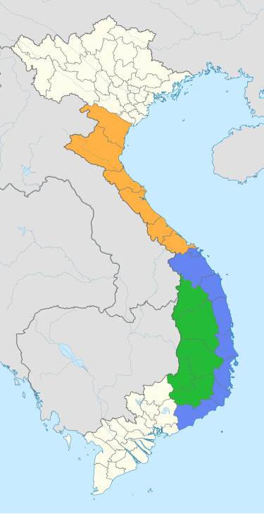

WIKI VIỆT NAM

Trung Bộ (hay còn gọi là Miền Trung) là một trong 3 miền địa lý của Việt Nam (gồm Bắc Bộ, Trung Bộ và Nam Bộ). Hiện nay, Trung Bộ là miền có diện tích lớn nhất trong 3 miền tại Việt Nam với 151.234 km². Trung Bộ có nhiều đồi núi lan sát ra biển, chia cắt các đồng bằng nhỏ hẹp. Khí hậu và phần lớn đất đai thường khắc nghiệt hơn hai miền còn lại. Trung Bộ được chia thành 3 khu vực là vùng Bắc Trung Bộ, vùng Duyên hải Nam Trung Bộ và vùng Tây Nguyên; với trung tâm là thành phố TW Đà Nẵng. Tùy vào ngữ cảnh, một phần của Bắc Trung Bộ cùng với vùng Bắc Bộ được gọi chung là Miền Bắc Việt Nam; Tây Nguyên, Duyên hải Nam Trung Bộ, phần còn lại của Bắc Trung Bộ cùng với vùng Nam Bộ được gọi chung là Miền Nam Việt Nam.
Trung Bộ nằm ở vị trí chuyển tiếp giữa Bắc Bộ và Nam Bộ. Ngoài hai xứ Thanh – Nghệ, Trung Bộ chứng kiến quá trình Nam tiến của người Việt diễn ra trên lãnh thổ từng thuộc nước Chăm Pa cổ. Các xung đột quân sự và ranh giới chia cắt Việt Nam trong một số thời kỳ lịch sử như thời Trịnh – Nguyễn phân tranh và Chiến tranh Việt Nam cũng nằm trên Trung Bộ.
Thời Pháp thuộc, Trung Bộ là một xứ bảo hộ lấy tên là Trung Kỳ, vốn có từ thời vua Minh Mạng của Nhà Nguyễn. Tên gọi Trung Bộ ra đời từ thời Đế quốc Việt Nam năm 1945. Trung Bộ còn được gọi là Trung Phần (1948–1975) dưới thời Quốc gia Việt Nam và Việt Nam Cộng hòa.
Miền Trung Việt Nam (Trung Bộ) có phía Bắc giáp khu vực Đồng bằng sông Hồng và Trung du và miền núi phía Bắc; phía Nam giáp các tỉnh Bình Phước, Đồng Nai và Bà Rịa – Vũng Tàu vùng Nam Bộ; phía Đông giáp Biển Đông; phía Tây giáp 2 nước Lào và Campuchia. Dải đất miền Trung được bao bọc bởi những dãy núi chạy dọc bờ phía Tây và sườn bờ biển phía Đông, vùng có chiều ngang theo hướng Đông - Tây hẹp nhất Việt Nam (khoảng 50 km) và nằm trên địa bàn tỉnh Quảng Bình
Bắc Trung Bộ
Duyên hải Nam Trung Bộ
Tây Nguyên
Địa hình miền Trung gồm 3 khu vực cơ bản là Bắc Trung Bộ, Tây Nguyên và Duyên hải Nam Trung Bộ.
Bắc Trung Bộ bao gồm các dãy núi phía Tây. Nơi giáp Lào có độ cao trung bình và thấp. Riêng miền núi phía Tây tỉnh Thanh Hoá có độ cao từ 1000 - 1500m. Khu vực miền núi Nghệ An - Hà Tĩnh là đầu nguồn của dãy Trường Sơn có địa hình rất hiểm trở, phần lớn các núi cao nằm rải rác ở đây. Các miền đồng bằng có tổng diện tích khoảng 6.200 km², trong đó đồng bằng Thanh Hoá do nguồn phù sa từ sông Mã và sông Chu bồi đắp, chiếm gần một nửa diện tích và là đồng bằng rộng nhất của Trung Bộ.
Tây Nguyên có diện tích khoảng 54.473,7 km², nằm về phía tây dãy Trường Sơn. Tây Nguyên có phía Tây giáp 2 nước Lào và Campuchia, phía Đông giáp khu vực Duyên hải Nam Trung Bộ và phía Nam giáp khu vực Đông Nam Bộ. Địa hình Tây Nguyên đa dạng, phức tạp, chủ yếu là cao nguyên với núi cao ở độ cao từ 250 - 2500m.
Duyên hải Nam Trung Bộ thuộc khu vực cận giáp biển. Địa hình ở đây bao gồm đồng bằng ven biển và núi thấp, có chiều ngang theo hường Đông - Tây (trung bình 40 – 50 km), hạn hẹp hơn so với Bắc Trung Bộ và Tây Nguyên. Có hệ thống sông ngòi ngắn và dốc, bờ biển sâu với nhiều đoạn khúc khuỷu, thềm lục địa hẹp. Các miền đồng bằng có diện tích không lớn do các dãy núi phía Tây trải dọc theo hướng nam tiến dần ra sát biển và có hướng thu hẹp dần diện tích lại. Đồng bằng chủ yếu do sông và biển bồi đắp, khi hình thành nên thường bám sát theo các chân núi.
Xét chung, địa hình Trung Bộ có độ cao thấp dần từ khu vực miền núi xuống đồi gò trung du, xuôi xuống các đồng bằng phía trong dải cồn cát ven biển rồi ra đến các đảo ven bờ.
Miền Trung nước ta có diện tích cồn cát lớn trải dài từ tỉnh Quảng Bình đến tỉnh Bình Thuận.
Kinh tế Miền Trung với sự tập trung là 5 tỉnh kinh tế trọng điểm, có nhiều lợi thế về vị trí chiến lược bao gồm nguồn nhân lực, 17 cảng biển, 15 khu kinh tế, 22 khu công nghiệp, 2 khu chế xuất, 8 sân bay, 2 xa lộ xuyên Việt, hành lang kinh tế Đông Tây và những dự án hàng chục tỷ USD. Tuy nhiên, hiện nay các tiềm năng sẵn có đó vẫn chưa phát huy được lợi thế kinh tế vùng miền nói chung khi các tỉnh, thành đều có những ưu thế nhưng chưa được quy hoạch tổng thể, đang còn tồn tại sự phát triển lao động sản xuất manh mún, tự phát. Các cảng biển nước sâu Vũng Áng - Sơn Dương (Hà Tĩnh), Chân Mây (Thừa Thiên Huế), Tiên Sa (Đà Nẵng), Kỳ Hà (Quảng Nam) và Dung Quất (Quảng Ngãi) không được hoạt động hết công suất tối đa. Các khu công nghiệp - chế xuất đang trong tình trạng thiếu vắng các doanh nghiệp trong và ngoài nước trú trọng và quan tâm đầu tư Các khu vực kinh tế trọng điểm của Miền Trung gồm 5 tỉnh/thành: thành phố Đà Nẵng (hạt nhân), tỉnh Thừa Thiên Huế, Quảng Nam, Quảng Ngãi, Bình Định với tổng diện tích khoảng 27.884 km², dân số năm 2006 vào khoảng 6,2 triệu người và dự báo đến 2025 là 8,15 triệu người [7]. Các khu vực kinh tế này không chỉ có vai trò là động lực thúc đẩy sự phát triển kinh tế - xã hội của khu vực miền Trung và Tây Nguyên mà còn có vị trí quan trọng trong chiến lược phát triển kinh tế - xã hội cả nước về địa lý, kinh tế, chính trị, văn hóa và an ninh quốc phòng. Là mặt tiền của tiểu vùng sông Mekong, từ đây có thể giao thương với các nước như Lào, Campuchia, Thái Lan, Myanma và xa hơn là các nước Nam Á và vùng Tây Nam Trung Quốc qua các trục hành lang Đông - Tây, quốc lộ 9, đường 14, đường 24, đường 19.
Năm 1994, Chính phủ phê duyệt dự án cảng biển nước sâu và Khu công nghiệp Dung Quất đã ra đời vùng kinh tế trọng điểm kéo dài từ Liên Chiểu (Đà Nẵng) đến Dung Quất (Quảng Ngãi), hình thành trục phát triển công nghiệp và du lịch dọc theo vùng duyên hải từ Đà Nẵng đến Dung Quất cùng với chuỗi đô thị đang phát triển trải dài 558 km theo bờ biển, gồm Huế, Đà Nẵng, Hội An, Tam Kỳ, Quảng Ngãi, Quy Nhơn và các khu kinh tế
Một góc Đà Nẵng, trung tâm kinh tế của khu vực Trung Bộ - Tây Nguyên.
lớn như Chân Mây - Lăng Cô, Chu Lai, Dung Quất, Nhơn Hội. Sau đó 2 năm (năm 1996) dự án cảng biển nước sâu và Khu công nghiệp thương mại - du lịch và dịch vụ Chân Mây ra đời dẫn đến sự phát triển vùng kinh tế trọng điểm ra đến Thừa Thiên Huế. Tiếp đến năm 2004, việc phê duyệt dự án cảng biển nước sâu và Khu kinh tế Nhơn Hội dẫn đến sự mở rộng vùng kinh tế trọng điểm về phía Nam đến Bình Định.
This site was created with the Nicepage